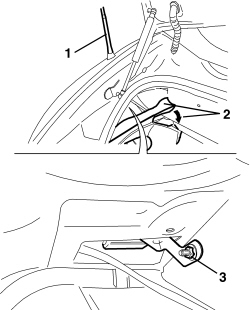
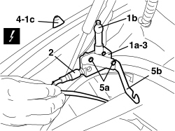
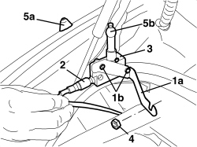

5570T27 AERIAL SUPPORT - R.R
- Path
- Procedures > 55 ELECTRICAL EQUIPMENT > 5570 ACCESSORIES > 5570T CAR RADIO/CAR TELEPHONE/VIDEO > 5570T27 AERIAL SUPPORT - R.R
- Kind
- repair procedure (removal / refitting; the operation number is the code)
- Applies to
- all engines; all production periods
- Interactive page
- https://sloeber94.github.io/elrnDB-aBrrSpdr/en/#/946002444
Applies to: all engines; all production periods
- Alternatively see,
Applies to: engines: 2.2 JTS, 3.2 JTS; all production periods; only with equipment: Spider
 Removing
Removing
 Refitting
RefittingOp. 7040B20 BACK TRIM FOR LUGGAGE COMPARTMENT/LOAD PLATFORM - ARRANGE
Op. 7040B10 LOAD PLATFORM (LUGGAGE PLATFORM) TRIM - R+R
Op. 7040B22 LUGGAGE COMPARTMENT/LOAD PLATFORM MOULDING - R+R
- For left trim only.
Op. 7040G30 BOOT LIGHT BULB HOLDER - R.R.
Op. 7040B18 LOAD COMPARTMENT LOAD PLATFORM SIDE TRIM ONE LH OR RH - R.R
1. Remove the aerial.
2. Move upper edge of sound-proofing.
3. Undo the aerial mount nut.

Applies to: engines: 2.2 JTS, 3.2 JTS; all production periods; only with equipment: Spider
1. Extract aerial mount (1a) by releasing ball bearing seat (1b) from rubber base (1c).
2. Detach the electrical connection.
Description | Connector | |
|---|---|---|
2 | AERIAL POWER SUPPLY/AMPLIFIER |
3. Recover the aerial mount complete with bracket.
4. Remove the rubber base by releasing it from the seat.
5. If necessary, unscrew bolts (5a) and remove bracket (5b).

Applies to: engines: 2.2 JTS, 3.2 JTS; all production periods; only with equipment: Spider
Refitting
Removing- Check that the aerial mounting is not damaged.
1. If removed, position bracket (1a) and tighten screws (1b).
2. Secure the electrical connection.
3. Fit the aerial mount complete with bracket in its seat.
4. Screw in the aerial mount nut.
5. Fit rubber base in its seat (5a) by attaching it to aerial mount ball bearing seat (5b).

Applies to: engines: 2.2 JTS, 3.2 JTS; all production periods; only with equipment: Spider
- Position upper edge of sound-proofing.
Op. 7040B18 LOAD COMPARTMENT LOAD PLATFORM SIDE TRIM ONE LH OR RH - R.R
Op. 7040G30 BOOT LIGHT BULB HOLDER - R.R.
Op. 7040B22 LUGGAGE COMPARTMENT/LOAD PLATFORM MOULDING - R+R
Op. 7040B10 LOAD PLATFORM (LUGGAGE PLATFORM) TRIM - R+R
Op. 7040B20 BACK TRIM FOR LUGGAGE COMPARTMENT/LOAD PLATFORM - ARRANGE
Topics linked from this page (8)
- 5570T28 CONTROL UNIT FOR RADIO AERIAL - R.R.
- 5570T61 MULTI-FUNCTION AERIAL - R.R.
- 7040B10 LOAD PLATFORM (LUGGAGE PLATFORM) TRIM - R+R
- 7040B18 LOAD COMPARTMENT LOAD PLATFORM SIDE TRIM ONE LH OR RH - R.R
- 7040B20 BACK TRIM FOR LUGGAGE COMPARTMENT/LOAD PLATFORM - ARRANGE
- 7040B22 LUGGAGE COMPARTMENT/LOAD PLATFORM MOULDING - R+R
- 7040G30 BOOT LIGHT BULB HOLDER - R.R.
- P025 AERIAL FEED/AMPLIFIER
Topics that link to this page (13)
- N012 POOR RADIO RECEPTION
- N013 TELEPHONE AUDIO NOT WORKING
- N014 TELEPHONE DOES NOT WORK (IN ANY CIRCUMSTANCES)
- N039 NAVIGATOR DETECTS INCORRECT POSITION
- N040 NAVIGATOR DOES NOT RECEIVE THE G.P.S. SATELITES
- E3510 RADIO - WIRING DIAGRAM
- E3510 RADIO - COMPONENT LOCATION
- E3510 RADIO - WIRING DIAGRAM
- E3510 RADIO - COMPONENT LOCATION
- E3510 RADIO - WIRING DIAGRAM
- E3510 RADIO - COMPONENT LOCATION
- E3510 RADIO - WIRING DIAGRAM
- E3510 RADIO - COMPONENT LOCATION